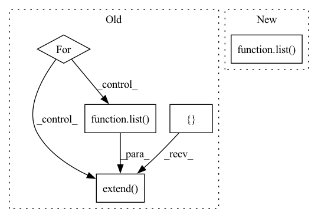

Pattern ID :1468

Before Change
itertools.accumulate(batch_size_per_feature)
)
recat_per_feature = recat
recat = []
for r in recat_per_feature:
recat.extend(
list(
range(
batch_size_per_feature_cumsum[r],
batch_size_per_feature_cumsum[r + 1],
)
)
)
return recat
After Change
)
permuted_batch_size_per_feature = [batch_size_per_feature[r] for r in recat]
input_offset = [0] + list(itertools.accumulate(batch_size_per_feature))
output_offset = [0] + list(
itertools.accumulate(permuted_batch_size_per_feature)
)
recat_tensor = torch.tensor(
recat,
device=device,
dtype=torch.int32,
In pattern: SUPERPATTERN
Frequency: 3
Non-data size: 5
Instances
Fragment ID: 6775639
Project Name: facebookresearch/torchrec
Commit Name: 860d5740f4a0f3c39b09457e6e3f83c71d3589d6
Time: 2022-03-30
Author: leongao@fb.com
File Name: torchrec/distributed/dist_data.py
M Class Name: AnonimousClass
N Class Name: AnonimousClass
M Method Name: _get_recat(5)
N Method Name: _get_recat(4)
M Parent Class:
N Parent Class:
M File Name: torchrec/distributed/dist_data.py
N File Name: torchrec/distributed/dist_data.py
M Start Line: 67
M End Line: 101
N Start Line: 44
N End Line: 120
'>
Before Change
itertools.accumulate(batch_size_per_feature)
)
recat_per_feature = recat
recat = []
for r in recat_per_feature:
recat.extend(
list(
range(
batch_size_per_feature_cumsum[r],
batch_size_per_feature_cumsum[r + 1],
)
)
)
return recat
After Change
)
permuted_batch_size_per_feature = [batch_size_per_feature[r] for r in recat]
input_offset = [0] + list(itertools.accumulate(batch_size_per_feature))
output_offset = [0] + list(
itertools.accumulate(permuted_batch_size_per_feature)
)
recat_tensor = torch.tensor(
recat,
device=device,
dtype=torch.int32,
'>
Fragment ID: 6775638
Project Name: pytorch/torchrec
Commit Name: 860d5740f4a0f3c39b09457e6e3f83c71d3589d6
Time: 2022-03-30
Author: leongao@fb.com
File Name: torchrec/distributed/dist_data.py
M Class Name: AnonimousClass
N Class Name: AnonimousClass
M Method Name: _get_recat(5)
N Method Name: _get_recat(4)
M Parent Class:
N Parent Class:
M File Name: torchrec/distributed/dist_data.py
N File Name: torchrec/distributed/dist_data.py
M Start Line: 67
M End Line: 101
N Start Line: 44
N End Line: 120
'>
Before Change
if not include_intermediate_images:
pil_images = list(map(T.ToPILImage(), img.unbind(dim = 0)))
else:
pil_images = []
for intermediate_img in intermediates:
pil_images.extend(list(map(T.ToPILImage(), intermediate_img.unbind(dim = 0))))
return pil_images // now you have a bunch of pillow images you can just .save(/where/ever/you/want.png)
def p_losses(self, unet, x_start, times, *, noise_scheduler, lowres_cond_img = None, lowres_aug_times = None, text_embeds = None, text_mask = None, noise = None, times_next = None):
After Change
if not return_all_unet_outputs:
outputs = outputs[-1:]
pil_images = list(map(lambda img: list(map(T.ToPILImage(), img.unbind(dim = 0))), outputs))
return pil_images[output_index] // now you have a bunch of pillow images you can just .save(/where/ever/you/want.png)
def p_losses(self, unet, x_start, times, *, noise_scheduler, lowres_cond_img = None, lowres_aug_times = None, text_embeds = None, text_mask = None, noise = None, times_next = None):
'>
Fragment ID: 6775637
Project Name: lucidrains/imagen-pytorch
Commit Name: bfe761b52c93f53c1a961c0912bed3b33042382c
Time: 2022-06-11
Author: lucidrains@gmail.com
File Name: imagen_pytorch/imagen_pytorch.py
M Class Name: Imagen
N Class Name: Imagen
M Method Name: sample(11)
N Method Name: sample(11)
M Parent Class: nn.Module
N Parent Class: nn.Module
M File Name: imagen_pytorch/imagen_pytorch.py
N File Name: imagen_pytorch/imagen_pytorch.py
M Start Line: 1443
M End Line: 1511
N Start Line: 1441
N End Line: 1507